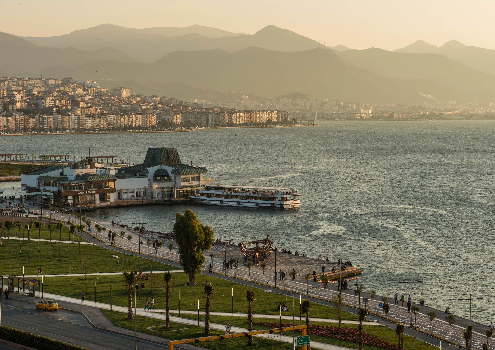
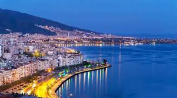
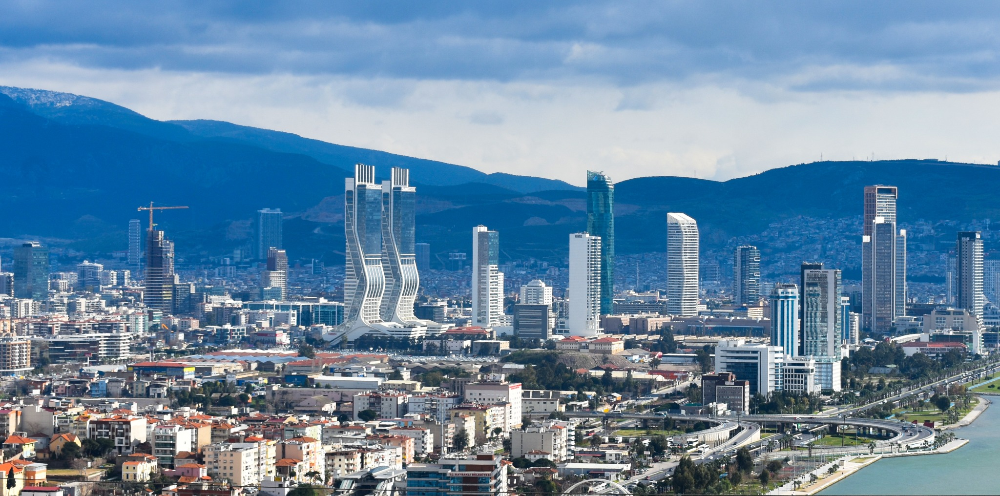

Kordon ve İzmir Körfezi

İzmir Körfezi

İzmir Saat Kulesi

Bayraklı ve Modern İzmir
İzmir Hakkında
İzmir, Türkiye'nin batısında yer alan ve Ege Bölgesi'nin en önemli şehirlerinden biridir. Tarihi, kültürel yapısı, sahil yaşamı ve turistik bölgeleriyle öne çıkar.
2025 yılı itibarıyla İzmir'in nüfusu yaklaşık 4,5 milyondur. İstanbul ve Ankara'dan sonra Türkiye'nin en büyük şehirlerinden biri olan İzmir, hem tarihi hem de modern yapısıyla dikkat çeker.
Nüfus
4.504.185
2025 yılı verisine göre yaklaşık nüfus.
Bölge
Ege
Türkiye'nin batısında, Ege Denizi kıyısında yer alır.
Plaka
35
İzmir'in araç plaka kodudur.
Kordon
Deniz kenarında yürüyüş yapmak, bisiklete binmek ve İzmir atmosferini yaşamak için en bilinen yerlerden biridir.
İzmir Körfezi
Şehrin sahil yaşamını ve manzarasını oluşturan önemli doğal alanlardan biridir.
İzmir Saat Kulesi
Konak Meydanı'nda yer alan Saat Kulesi, İzmir'in en bilinen simgelerinden biridir.
Bayraklı
Yüksek binaları ve iş merkezleriyle İzmir'in modern yüzünü gösteren bölgelerden biridir.